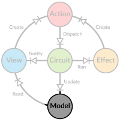

Application Model

Having all your application state in a single model may seem like a daunting design task, but it's not really that different from designing a hierarchical UI layout. If you are used to having a distributed state between different stores and components, take some time to sit down and redesign the model as a single hierarchy.
As the model has to be immutable, it makes sense to build it out of case classes. This provides us with many benefits
down the line, such as pattern matching and use of the copy method. For illustration purposes we'll define a simple
case class hierarchy to represent the application model.
case class Root(a: A, b: B, c: String)
case class A(d: Int, e: String)
case class B(f: Boolean, g: Option[D])
case class D(h: Seq[Int], i: Int)
object AppCircuit extends Circuit[Root] {
// provides initial model to the Circuit
override def initialModel = Root( ... )
}
Making modifications to an immutable model means making a copy of the model every time something changes. Naturally
we'll want to modify only those parts of the hierarchy that we absolutely need to, leaving the rest as it is. These
changes can be visualized as below: 
- We want to change
B.ftofalse - To implement the change, we must also change
bandrootobjects withroot = root.copy(b = root.b.copy(f = false)) - Next we want to change
A.eto"normal" - To implement this change, we must also change
aandrootwithroot = root.copy(a = root.a.copy(e = "normal"))
All the other parts of the model hierarchy stay the same throughout these changes, so your render code can skip
re-rendering root.b.g for example.
Accessing the Model
In Diode your application model is safely tucked inside the Circuit class, without any direct access. To initialize the
model, override the initialModel function to return your initial model. Instead of directly accessing the model you
will get indirect access via readers and writers. These are defined as ModelR and ModelRW traits.
For example if your view needs to render the string e in class A, it doesn't care where that data comes from, as
long as it has access to it. Furthermore, since the state changes always create a new root model, we cannot simply give
the current value and expect that to work in the future. What we need is a chain of functions going from root all the
way to the piece of data we are interested in. The classes implementing ModelR and ModelRW provide this. To build a
reader to root.a.e we would write:
val reader: ModelR[Root, String] = new RootModelR(root).zoom(_.a.e)
To get the current value from the reader we simply call reader.value or reader().
The Circuit provides zoom and zoomRW functions to zoom into the application model, so we can rewrite the previous
example as:
val reader: ModelR[Root, String] = AppCircuit.zoom(_.a.e)
Note that you don't need to specify the types for the readers, they are automatically inferred. They are displayed here for clarity.
ModelRO versus ModelR
ModelR[M, S] has a super trait ModelRO[S] which actually defines most of the methods. The difference is that ModelRO
does not know about the type of the model and can thus be used more freely. The examples in previous chapter could as
well been written like this:
val reader: ModelRO[String] = AppCircuit.zoom(_.a.e)
If you see in your code any instances of ModelR[_, S] you probably should replace it with ModelRO[S].
Fast Equality Comparison
An important benefit of an immutable model is the use of reference equality to quickly check if anything has changed.
There is no need for expensive shallow or deep equality checks to find out a change anywhere in the model. Sometimes,
however, you need to use regular equality checks, for example with values like Int or Double, or when you build an
intermediate object to represent multiple values in the model. For this reason Diode's ModelR provides special ===
and =!= methods that can be used to compare current value of the reader to a previous value, using the correct
equality check.
By default all AnyVals are compared with regular == while all AnyRefs use the eq operator. Additionally there is
a special marker trait UseValueEq that forces the comparison to use ==. This is typically useful for model readers
that combine multiple values from the model into a single entity (typically a case class). Because these readers always
create a new instance of the output, reference equality cannot be used.
val oldStr = reader()
// update the model...
if (reader =!= oldStr) {
// the value has changed
}
Option and Other Containers in the Model
When the model contains an Option or another container (for example Pot for async data) and
you want to access the contained data, the reader needs to be constructed a bit differently. A naive approach is to use
map in the zoom function to map over the container. For example to access the sequence of Ints in D we could use
something like
val reader: ModelR[Root, Option[Seq[Int]]] = AppCircuit.zoom(_.b.g.map(_.h))
assert(reader.value ne reader.value)
This works just fine for retrieving the value, but it breaks reference equality as the map function recreates the
resulting Option. This means that every call to reader.value returns a different instance. To work around this issue
Diode provides special readers that cache container reference and update it only when the content of the container
changes. Use map, flatMap, zoomMap and zoomFlatMap to create such readers.
val reader: ModelR[Root, Option[Seq[Int]]] = AppCircuit.zoomMap(_.b.g)(_.h)
assert(reader.value eq reader.value)
Containers must support map, flatMap and equality check for the content to be compatible with Diode. In practice
these readers require a Monad type class to be implicitly available for the container type. Diode provides monads for
Option and Pot. If you use some other containers, you must provide the monad yourself. The type class interface is
defined in diode.Monad and the implementation consists of just map, flatMap and isEqual methods.
Note that the above is only necessary if you want to maintain efficient reference equality checking. If your code
doesn't need this, it's better to just use the naive approach with a plain zoom call.
Complex Access Patterns
We are not limited to traversing the hierarchy to get a reader for just a single value. Since we get to define the access function ourselves, we can freely access anything in the model and return a composite.
val complexReader: ModelR[Root, (String, Boolean)] =
AppCircuit.zoom(r => (r.a.e, r.b.f))
Note that a reader like this will not support correct reference equality, because the tuple is recreated every time the
reader is accessed. You may zip two readers together to form a reader returning a tuple that preserves reference
equality (the tuple is only updated when its constituents change).
val zipReader: ModelR[Root, (String, Int)] = reader.zip(AppCircuit.zoom(_.a.d))
You may also define a custom case class with the UseValueEq marker trait, to combine multiple values from the model.
This will force the use of normal case class equality check instead of reference equality. Depending on the complexity
of your case class, the equality check may become inefficient, so you should pay some attention.
case class FromAB(e: String, g: Option[D]) extends UseValueEq
val abReader: ModelR[Root, FromAB] =
AppCircuit.zoom(r => FromAB(r.a.e, r.b.g))
If you cannot use the marker trait, a second option is to define your custom FastEq typeclass for your reader output
type. This approach also lets you define a fully custom equality function, in case that is required. Note that due to
Scala implicit priorities, you need to make sure your custom typeclass has higher priority than the default
FastEq[AnyRef], typically by importing it explicitly.
case class ExtData(age: Int, name: String)
implicit object ExtDataEq extends FastEq[ExtData] {
override def eqv(a: ExtData, b: ExtData): Boolean = a == b
}
val extReader: ModelR[Root, ExtData] =
AppCircuit.zoom(r => ExtData(r.a.d, r.c))
Finally it's also possible to explicitly supply a FastEq instance to the zoom functions as a curried parameter. This
might come in handy when you calculate a value from the model but don't want to wrap it into a case class.
val valReader: ModelR[Root, String] =
AppCircuit.zoom(r => s"${r.a.d}:${r.a.e}")(FastEq.ValueEq)
These approaches help detaching the application model from the UI hierarchy, as you can keep your data in a sensible structure while allowing your UI components to access it in a natural way.
References within the Model
The application model being immutable, it makes sense to have a normalized data model where a single piece of data
occurs only in a single place within the model. For example if your model has ProductGroups consisting of Products
but a product can belong to multiple groups, the group should hold only references to the product data, not the data
itself.
In Diode context a reference to a value of type V would be ModelRO[V] but that provides no update mechanism. To
facilitate easy referencing of other data within the model, Diode provides a RefTo class.
class RefTo[V](val target: ModelRO[V], val updated: V => Action) {
def apply() = target()
}
It combines a model reader with a function to generate an update action for this particular reference. Using the Product example above, the model would be defined as
case class RootModel(products: Map[String, Product], productGroups: Map[String, ProductGroup])
case class Product(id: String, ...)
case class ProductGroup(id: String, products: Seq[RefTo[Product]], ...)
// action to update a product
case class UpdateProduct(id: String, newProduct: Product) extends Action
var model = RootModel(...)
val rootReader = new RootModelR(model)
// create a reference to a Product
def productRef(id: String) = RefTo(rootReader.zoom(_.products(id)), UpdateProduct(id, _))
The RefTo paradigm is especially useful with Diode's async collections as you can
easily reference data that has not yet been loaded into the client, but will be as soon as the reference is accessed.
References can also be cyclic (which would be impossible in a normal immutable hierarchy), meaning a Product can have a
reference (or several) back to ProductGroup(s).
Modifications through Writers
The ModelRW trait adds functionality to update the model. In addition to providing a function for reading a value, it
requires a second function for updating.
val rwForA: ModelRW[Root, A] = AppCircuit.zoomRW(_.a)((m, v) => m.copy(a = v))
val rwForA_e: ModelRW[Root, String] = rwForA.zoomRW(_.e)((a, v) => a.copy(e = v))
This time we are defining the writer in two steps to take advantage of the provided function composition. For the common case of
accessing a value using _.a.b.c syntax, there is a macro based helper function zoomTo. The above example could be simplified to
val rwForA_e: ModelRW[Root, String] = AppCircuit.zoomTo(_.a.e)
Most of the documentation will use the zoomTo version, but if you need to update something more complicated, like inside a collection,
you would need to provide the reader and writer functions separately using zoomRW.
To update the model (and creating a new model), just call updated.
val newRoot: Root = rwForA_e.updated("New value!")
Since Circuit doesn't allow us to change the internal model directly, we are just storing a copy for demonstration
purposes. Only way to make actual changes to the model is to dispatch and handle actions.